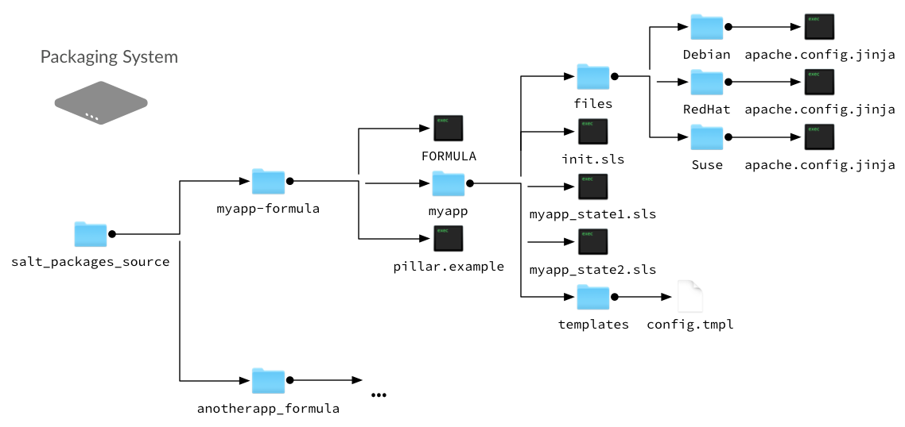

Building SPM Packages¶
The first step when using Salt Package Manager is to build packages for each of of the formulas that you want to distribute. Packages can be built on any system where you can install Salt.
Package Build Overview¶
To build a package, all state, pillar, jinja, and file templates used by your formula are assembled into a folder on the build system. These files can be cloned from a Git repository, such as those found at the saltstack-formulas organization on GitHub, or copied directly to the folder.
The following diagram demonstrates a typical formula layout on the build system:
{kind=link}
In this example, all formula files are placed in a myapp-formula folder.
This is the folder that is targeted by the spm build command when this
package is built.
Within this folder, pillar data is placed in
a pillar.example file at the root, and all state, jinja, and template files
are placed within a subfolder that is named after the application being
packaged. State files are typically contained within a subfolder, similar to
how state files are organized in the state tree. Any non-pillar files
in your package that are not contained in a subfolder are placed at the root
of the spm state tree.
Additionally, a FORMULA file is created and placed in the root of the folder. This file contains package metadata that is used by SPM.
Package Installation Overview¶
When building packages, it is useful to know where files are installed on the
Salt master. During installation, all files except pillar.example and FORMULA are copied
directly to the spm state tree on the Salt master (located at
\srv\spm\salt).
If a pillar.example file is present in the root, it is renamed to
<formula name>.sls.orig and placed in the pillar_path.
{kind=link}
注解
Even though the pillar data file is copied to the pillar root, you still
need to manually assign this pillar data to systems using the pillar top
file. This file can also be duplicated and renamed so the .orig
version is left intact in case you need to restore it later.
Building an SPM Formula Package¶
Assemble formula files in a folder on the build system.
Create a FORMULA file and place it in the root of the package folder.
Run
spm build <folder name>. The package is built and placed in the/srv/spm_buildfolder.spm build /path/to/salt-packages-source/myapp-formula
Copy the
.spmfile to a folder on the repository system.
Types of Packages¶
SPM supports different types of packages. The function of each package
is denoted by its name. For instance, packages which end in -formula are
considered to be Salt States (the most common type of formula). Packages which
end in -conf contain configuration which is to be placed in the
/etc/salt/ directory. Packages which do not contain one of these names are
treated as if they have a -formula name.
formula¶
By default, most files from this type of package live in the /srv/spm/salt/
directory. The exception is the pillar.example file, which will be renamed
to <package_name>.sls and placed in the pillar directory (/srv/spm/pillar/
by default).
reactor¶
By default, files from this type of package live in the /srv/spm/reactor/
directory.
conf¶
The files in this type of package are configuration files for Salt, which
normally live in the /etc/salt/ directory. Configuration files for packages
other than Salt can and should be handled with a Salt State (using a formula
type of package).
Technical Information¶
Packages are built using BZ2-compressed tarballs. By default, the package
database is stored using the sqlite3 driver (see Loader Modules below).
Support for these are built into Python, and so no external dependencies are needed.
All other files belonging to SPM use YAML, for portability and ease of use and maintainability.
SPM-Specific Loader Modules¶
SPM was designed to behave like traditional package managers, which apply files to the filesystem and store package metadata in a local database. However, because modern infrastructures often extend beyond those use cases, certain parts of SPM have been broken out into their own set of modules.
Package Database¶
By default, the package database is stored using the sqlite3 module. This
module was chosen because support for SQLite3 is built into Python itself.
Please see the SPM Development Guide for information on creating new modules for package database management.
Package Files¶
By default, package files are installed using the local module. This module
applies files to the local filesystem, on the machine that the package is
installed on.
Please see the SPM Development Guide for information on creating new modules for package file management.
Version 2016.3.0-182-gbed98d8